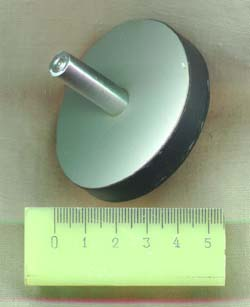
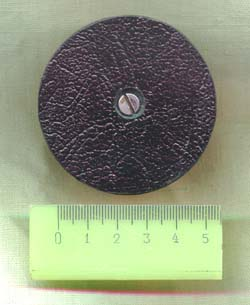

Демагнетизатор стали: 6-полюсный
кольцевой постоянный
магнит диаметром 60 мм, приводимый во вращение


Размагничивание стальных изделий может быть произведено посредством переменного магнитного поля с затухающей амплитудой [5]. Переменное магнитное поле может быть создано с помощью многополюсных постоянных магнитов, приводимых во вращение [7]. Затухание амплитуды магнитного поля происходит при перемещении вращающейся магнитной системы вдоль размагничиваемого объекта и удалении от него. Вращение может осуществляться с помощью различных инструментов, в том числе и ручных (без использования электроэнергии).
Демагнетизатор стали представляет из себя кольцевой постоянный магнит (типоразмер К60 х 24 х 9, материал - феррит бария) с шестью полюсами (намагничивание аксиальное), приклеенный к стальному основанию и закрытый сверху пластиковой накладкой (для предохранения поверхности размагничиваемых деталей от повреждения). К основанию крепится хвостовик, который может быть вставлен в инструмент, способный создавать вращательное движение. Напряженность магнитного поля на рабочей поверхности демагнетизатора до 90000 А/м (110 мТл), на расстоянии 10 мм от поверхности - до 10000 А/м (13 мТл).
Способ применения
Хвостовик демагнетизатора закрепляется в патроне, например, дрели. Дрель приводится во вращение. Частота вращения патрона может составлять 1 ... 5 оборотов в секунду или больше. Демагнетизатор подводится к объекту, который необходимо размагнитить, как можно ближе (размагничиваемый объект обязательно должен быть зафиксирован, так как между ним и демагнетизатором возникают силы притяжения), затем при необходимости осуществляется движение демагнетизатора вдоль поверхности объекта (змейкой). После этого демагнетизатор отводится от объекта. Если размеры объекта большие, то размагничивание можно произвести с разных сторон. Для оперативного контроля качества размагничивания могут быть применены подручные мелкие стальные предметы: опилки, стружка, гвоздики, предварительно также размагниченные. Более тщательное исследование качества размагничивания можно произвести с помощью супервизора [1], тесламетра или микротесламетра [3], а также магнитного флюксметра (веберметра).
Дополнительные возможности
Так как демагнетизатор представляет из себя постоянный магнит, то он может быть использован также для намагничивания или подмагничивания стальных объектов, например, инструмента (отвертки, сверла и т. п.), а также в качестве магнитного прижима (держателя, фиксатора) [2].
Намагничивание постоянного магнита производилось в установке импульсного намагничивания [4], включающей в себя специальное намагничивающее устройство [6]. Контроль качества намагничивания (магнитной индукции на поверхности магнита) выполнялся с помощью тесламетра [3].
Ссылки:
22.06.2004
09.09.2005
07.02.2006
16.09.2006
28.12.2007
Альтернативные источники
энергии
Компьютеры и
Интернет
Магнитные поля
Механотронные системы
Перспективные
разработки
Электроника и
технология